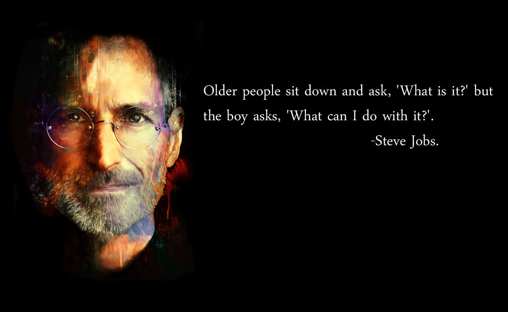

Steven Paul Jobs (São Francisco, Califórnia, 24 de fevereiro de 1955 — Palo Alto, Califórnia, 5 de
outubro de
2011) foi um inventor, empresário e magnata americano no setor da informática. Notabilizou-se como
co-fundador, presidente e diretor executivo da Apple Inc. e por revolucionar seis indústrias:
computadores
pessoais, filmes de animação, música, telefones, tablets e publicações digitais. Além de sua ligação com
a
Apple, foi diretor executivo da empresa de animação por computação gráfica Pixar e acionista individual
máximo da The Walt Disney Company. Morreu em 5 de outubro de 2011, aos 56 anos de idade, devido a um
câncer
pancreático.

Motivacional
Galeria
Steve Jobs e Bill Gates.Apresentação do primeiro Iphone, dividor de águas no mundo dos Smartphones.
Steve Jobs criou o iPad para mostrar a um funcionário da Microsoft o que um Tablet
realmente pode ser.Steve Jobs e Steve Wozniak.